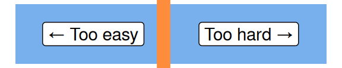

Pivot tables and pivot charts
excel
intermediate
Previous attendees have said…
- 21 previous attendees have left feedback
- 100% would recommend this session to a colleague
- 95% said that this session was pitched correctly

Three random comments from previous attendees
- Seemed rushed - make the sessions longer perhaps or breakdown into more manageable chunks. Session order seems strange i.e. beginner sessions after intermediate - perhaps that’s an issue of when I found out about the KIND Network.
- Well presented and lots of little tips to expand my skills using excel
- I am glad that I am able to attend this sessions.
Welcome!
- this session is for üå∂Ô∏èüå∂Ô∏èintermediate Excel users
- we’ll do an initial chat and run through, followed by a practical demo
- you’re welcome to stay for all or part of the session
- if you want to follow the practical part, you’ll need:
- Excel, ideally M365 Desktop
- previous Excel experience (particularly around references, tables, and formulas)
- the data: guidance / download page / direct / short tinyurl.com/kinddata1
- it also helps if you have access to the chat. You may need to add youself to the KIND Network Teams channel: tinyurl.com/kindnetwork
Session outline
- Pivot tables
- Pivot charts
- Slicers
- the session is totally informal
- cameras on, please
- chat/question away
- don’t panic if things go wrong
Why pivot tables?
- the key summary tool in Excel
- we often want to summarise long/complex data
- two key concerns:
- we want to do that safely
- we also want to do that effectively
- pivot tables are safe and effective
- they keep your analysis out of your data
- they have lots of powerful tools built-in
Some data
- on the 18 week referral target
- Copy the data link
- Open the Get Data From web tool

- Paste in the link

What questions might we ask about that data?
Insert a pivot table
- on a new sheet

ALT,N,V,T
Adding data to a pivot table

- we build pivot tables from the fields interface
Adding data to a pivot table

- drag values to fields
- dropdowns change settings
Improving our pivot table

- that gives us a simple pivot table
- we can also add a PivotChart instantly - click on your pivot table, and press
Alt + F1- play with the expansion buttons - the PivotChart should update to reflect the way that your PivotTable is currently arranged
PivotTable warnings
- this isn’t Excel!
- warnings about coherence
PivotTable tips
Note
- Double-click any cell in a PivotTable to see the underlying data
- Group PivotTable items using:
Shift+Alt+→(right arrow) to add items to a groupShift+Alt+←(left arrow) to ungroup
- Add a new calculated field using
Ctrl+Shift+=(equals) - Delete an entire PivotTable using
Ctrl + Athen pressingDel
Add board names
- those codes are hard work
- let’s make them look a little more human
- board names data
Years and months
- our Month column is a pain
- we can turn that back into a proper date
=date(left([@Month], 4), right([@Month], 2), 24)- refresh the pivot table, and update the fields
PivotTable pages
- we can split out parts of a PivotTable to separate worksheets
Task
- Drag the Years item to the Filters field. This should update the PivotTable so that only one year’s data is present at once
- We can also split each year into its own worksheet: find the option in the PivotTable Analyze section of the ribbon - or via
Alt,J,T,T,P
Slicing
- one slicer can control many PivotTables
Task
- Click within one of your new annual PivotTables
- Add a slicer from the insert menu (or
ALT,N,S,F) - Select date to slice on
- When the slicer appears, right click and select “Report Connections…” and add the other annual PivotTables
- Now select a couple of months from your slicer, and see the effect on your PivotTables
- if you’re working with dates, you can also use the timeline, which works in exactly the same way. Insert with
ALT,N,S,T, update the connections, and you can get fine-grained control over which date-ranges contribute to your PivotTable